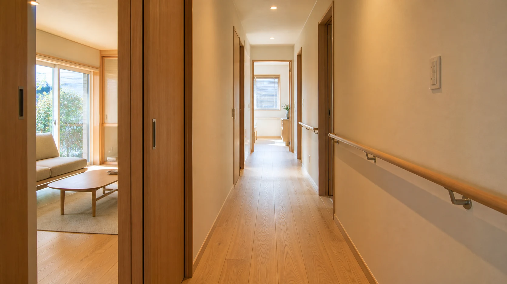
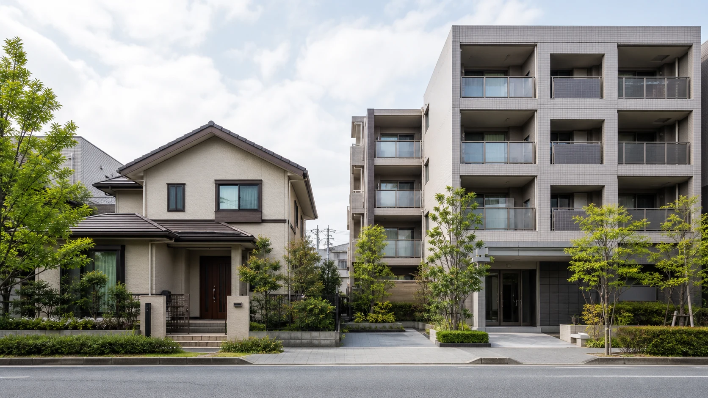
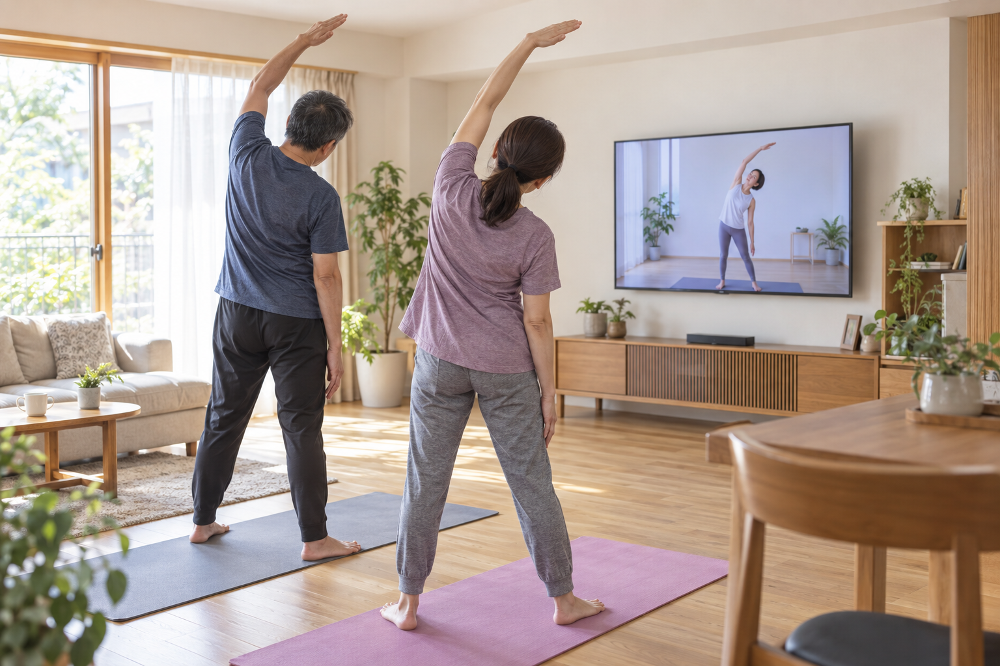
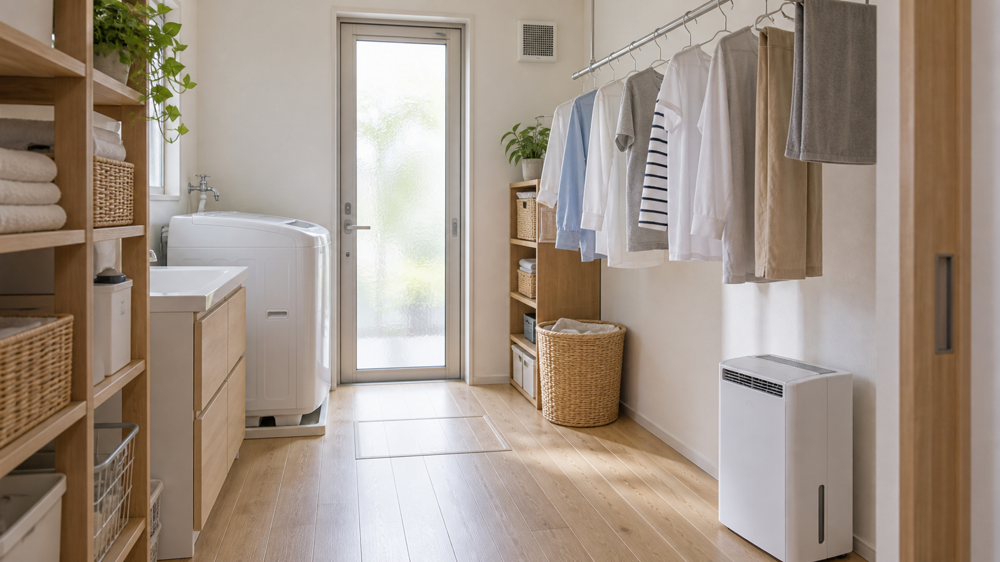
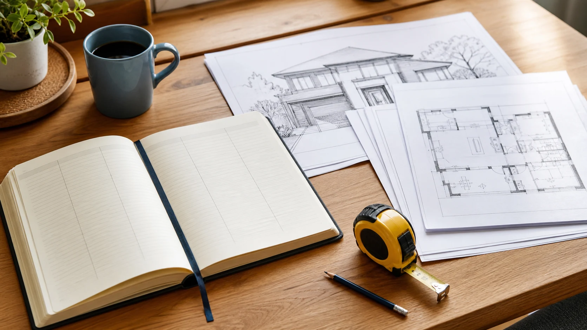
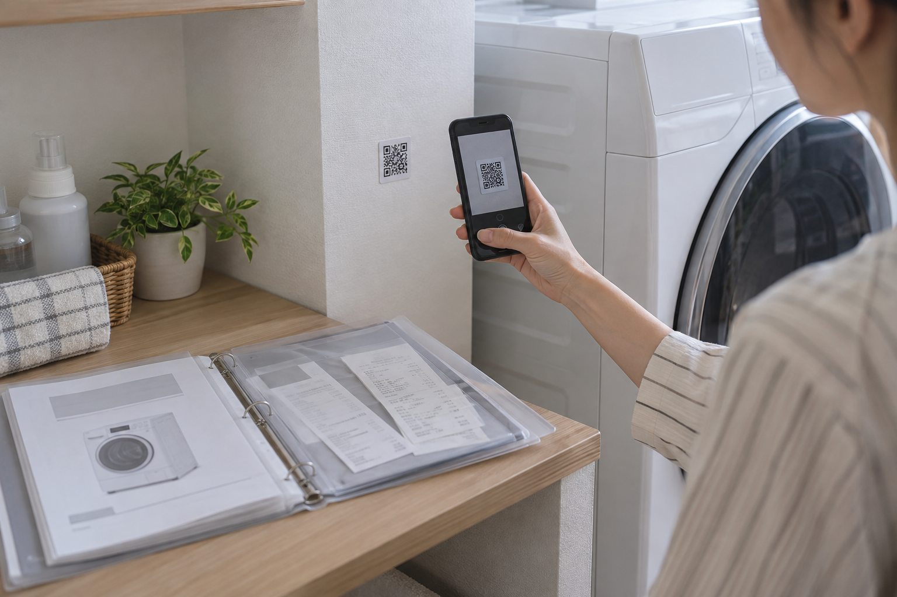
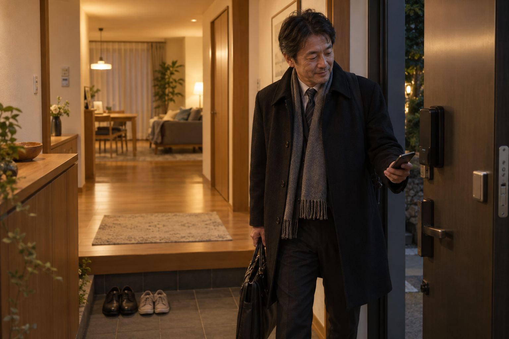

COLUMN SERIES
暮らしのアドバイザー特別編集
ちょっと深い住まいの話
住まいの価値、家族の関係、これからの暮らし。既存の家をどう整え、使い続け、引き継ぐかを考えるコラムです。
 この連載を書いた人｜エイスケ
この連載を書いた人｜エイスケ第21〜30回の記事一覧
ご確認用の10記事です。内容・表現・画像の確認をお願いします。
10件を表示
リフォームの値上がり、なぜ？｜見積もりを確かめて「やりたい時がやり時」に
万博の建設費見直しと住宅設備の価格改定から、値上がりの背景と見積もりの確かめ方を解説。急かす営業に流されず、家族で必要な工事を選びます。

家の点検は1年目から｜1・5・9・10・20・30年の確認と、保証の見直し
戸建てとマンションの点検項目を年数別に整理。屋根・外壁・窓・給湯器の変化を記録し、保証期限前の相談と将来の修繕計画につなげます。

50歳からのバリアフリー｜親の介護に備える手すり・段差・夜の明かり
必要になって慌てる前に、本人の動作に合う手すりや通路を確認。小さな段差、設置後の失敗、照明、介護保険の住宅改修まで具体的に考えます。

受け継いだ土地、どう活かす？｜土地活用の選択肢・手間・税金を比べる
駐車場ありきで決めず、空き家賃貸、土地貸し、建築、売却、管理継続を比較。仮の収支計算と固定資産税の確認から、家族と専門家へ相談する順番を紹介します。

50代から、夫婦それぞれの自分時間を｜趣味と二人の時間を楽しむ住まい
それぞれの居場所、共有する場所、行き来する動線を基本に、家具配置から趣味部屋まで具体化。音楽・映画・ヨガを楽しむ住まいを提案します。
家を買うのは結婚してから？｜20代から考えたい住宅取得のメリットと注意点
未婚・既婚を問わず、若いうちの住宅取得を前向きに検討。時間の余裕、総住居費、自宅と投資の違い、転勤時の対応を具体的に整理します。

室内干しが乾かない家を変える｜便利グッズと「洗う・干す・しまう」の短い動線
著者の乾燥機の使い分けから、身近な部屋干しグッズ、浴室乾燥、ランドリールームへ。外干し中心と室内干し中心の間取りを図で比較します。

スタグフレーションが気になる今、50代からの住まいにどうお金を使う？
買い物の値上がりへの共感から、住まいに使うお金の優先順位へ。必要な修繕と楽しみを分け、焦らず「やりたい時」に備える方法を考えます。

家の取扱説明書を、使える記録に｜修繕履歴・QR・AIで迷わない住まい
引き渡しでもらった箱を開け、紙の説明書と修繕履歴を整理。設備のQRから取説を開き、AIで該当ページや相談先を探す具体的な使い方を紹介します。

スマートホームは、もう身近｜わが家の一日でわかる自動化と見守り
スマホで解錠、帰宅時の点灯、朝のニュースとカーテン、家族の通知。著者の実体験から、便利さと家族への配慮を両立する導入方法を紹介します。
該当する記事がありません。検索語を変えてください。
本ページは公開前のご確認用です。記事の公開日・本番反映は、ご確認後に別途調整します。